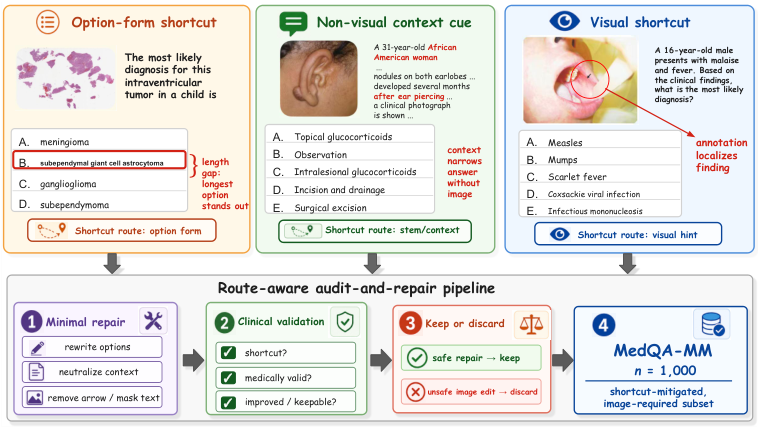

MedQA-MM: Shortcuts Behind Medical Visual Reasoning
EMNLP 2026 Poster
Auditing shortcut cues to test whether medical benchmark scores reflect image-grounded reasoning.
Hi ! I'm Benlu, a PhD student at UMass Amherst in the BioNLP group.
My research focuses on medical reasoning and evaluation in language models, including multimodal question answering, evidence-based medical calculations, and medical procedure coding. I study how models use clinical and visual evidence, where their reasoning fails, and how to evaluate and improve it.
* Equal contribution. Author copies and citation files.

EMNLP 2026 Poster
Auditing shortcut cues to test whether medical benchmark scores reflect image-grounded reasoning.

ACL 2026 · System Demonstrations
A human-in-the-loop system for procedure coding, with constrained decoding and interpretable confidence.


EMNLP 2025 Oral
Step-level evaluation of medical calculations, and a framework for improving evidence use and calculation accuracy.
MS · Computer Science
BS · Computer Engineering
BEng · Computer Engineering
Postgraduate Associate (Predoc) · Full-time
Post-training and evaluation of language and multimodal models for clinical reasoning.
Research Assistant · Part-time
Clinical NLP and medical AI, including radiology report generation, medical reasoning, and retrieval-augmented language models.
Teaching Assistant · UMass Amherst